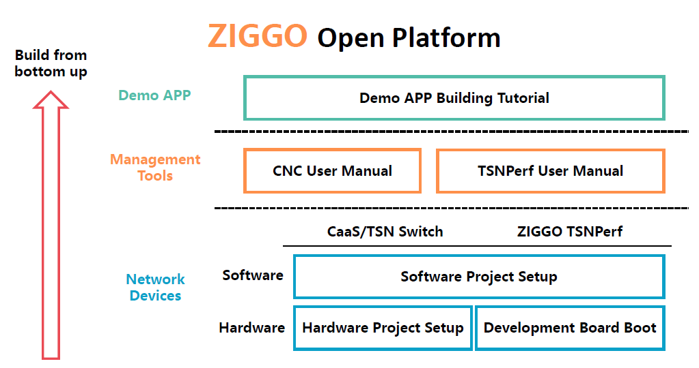

ZIGGO Device: 一种灵活且符合标准的TSN性能评估工具包 #

目录 #
简介 #
ZIGGO 是一个 灵活、符合标准 且 控制功能虚拟化 的 TSN 交换机平台，适用于工业控制、汽车电子及其他时间敏感应用。
这是 ZIGGO Device 的文档。（我们还提供符合 IEEE 802.1 TSN 标准的 ZIGGO-CaaS-Switch。）我们的设备支持测试所有符合标准的交换机。
ZIGGO 开放平台 #

ZIGGO 开放平台的构建包括三个层次：网络设备、管理工具和演示应用：
演示 #
我们提供了 TSN 交换机的演示视频。视频展示了 ZIGGO-CaaS-Switch 相较于普通交换机的优越性能。
图片左侧是我们使用的 ZYNQ 开发板，右侧是我们构建的 TSN 显示板。

点击图片观看视频！或者点击这里。
功能 #
-
ZIGGO 支持同时传输
信息技术（IT）和操作技术（OT）数据流量，并提供 QoS 保证。 -
ZIGGO 符合 IEEE 标准
802.1AS、Qav、Qbv和Qcc。 -
ZIGGO 提供
实时和确定性以太网传输- ZIGGO 实现 零丢包、微秒级延迟 和 纳秒级抖动门控能力。
- ZIGGO 保证 千兆吞吐量。
- ZIGGO 提供适用于 所有以太网帧大小 的门控精度。
开始前阅读 #
开始使用 ZIGGO-CaaS-Switch/ZIGGO-Device 是一个相当困难的任务。用户/开发者需要具备足够的基础知识，并准备好进行长时间的学习和调试。
请参考 basic_knowledge.md 以检查您是否有能力胜任 ZIGGO。
快速入门 #
请参考 required.md 进行准备。
之后，请参考 getting_started.md 以构建并运行单个 ZIGGO Device。
系统设计 #
ZIGGO 实现于 ZYNQ-7000 SoC 上，并利用 ZYNQ 的硬件和软件可编程性。

我们还提供了更深入的文档，解释 ZIGGO Device 的具体设计原则。
演示应用教程 #
我们还提供了一个测试平台构建文档，允许您使用 ZIGGO 交换机和设备构建实时以太网系统。
通过该平台，我们可以测量 TSN 时间关键流量的 延迟 和 抖动、交换机的 门控能力、带宽保证 和 门控精度。
用商业 TSN 交换机替换 ZIGGO CaaS 交换机也可以测试其上述能力。
许可和引用 #
ZIGGO 根据 MIT 许可 发布。
如果该项目对您的研究有帮助，请考虑引用我们的论文，BibTex 如下：
@inproceedings{caas,
author={Yang, Zheng and Zhao, Yi and Dang, Fan and He, Xiaowu and Wu, Jiahang and Cao, Hao and Wang, Zeyu and Liu, Yunhao},
booktitle={IEEE INFOCOM 2023 - IEEE Conference on Computer Communications},
title={CaaS: Enabling Control-as-a-Service for Time-Sensitive Networking},
year={2023},
pages={1-10},
doi={10.1109/INFOCOM53939.2023.10228980}}
@inproceedings{etsn,
author={Zhao, Yi and Yang, Zheng and He, Xiaowu and Wu, Jiahang and Cao, Hao and Dong, Liang and Dang, Fan and Liu, Yunhao},
booktitle={IEEE ICDCS 2022 - IEEE International Conference on Distributed Computing Systems},
title={E-TSN: Enabling Event-triggered Critical Traffic in Time-Sensitive Networking for Industrial Applications},
year={2022},
volume={},
number={},
pages={691-701},
doi={10.1109/ICDCS54860.2022.00072}}
待办事项 #
- ZIGGO CaaS Switch 发布
- ZIGGO Device 发布
- ZIGGO Device 源代码
- 搭建测试平台教程
- TSN 测试用例
我们将在教程中扩展每个测试到多个测试用例，以涵盖不同的边缘情况并全面测试 TSN 交换机的性能。
- 支持设备列表
目前，我们仅测试了自己的 Ziggo 交换机，并正在测试其他商业交换机（如华为、H3C 和 NXP）。我们预计将来维护一个测试结果列表。
贡献 #
请参阅指南，了解如何寻求帮助或为 ZIGGO 的开发做出贡献！
开发团队只会回答 GitHub 问题上的问题，拒绝其他形式的提问。